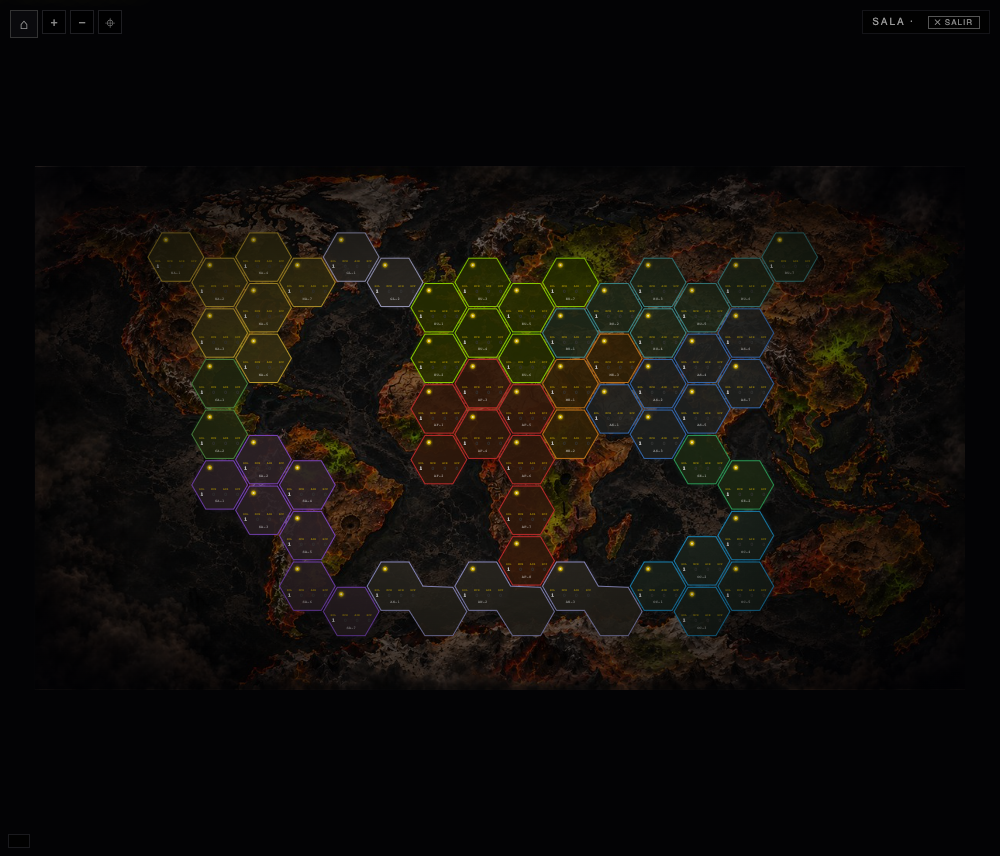
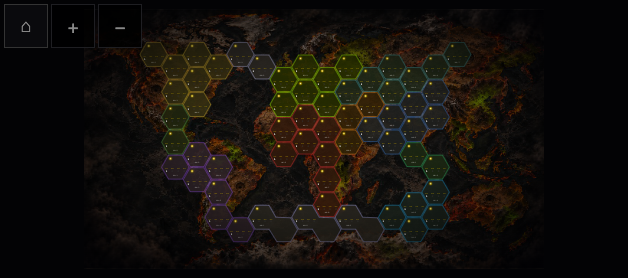

NUKE3000 · Animaciones oficiales
Recortes oficiales sobre el tablero original, con dados y resultados reales de V4. Estas escenas son fixtures de integración identificadas; las partidas completas se documentan aparte.
Resultados de pruebas · Origen y calidad de las miniaturas
Sorteo de orden y desempate
Batalla: ganador, baja y degradación
Misil: intercepciones, impacto automático y D12
Mantenimiento: tirar todos y después elegir bases
Casos adicionales: intercepción, cadena y cancelación
Misil interceptado: sin impacto ni D12D12=1 y reacción en cadena realCancelación/visibilidad y continuidad
Tablero original antes / después
60 territorios, coordenadas, adyacencias, fondo y SVG idénticos. Cero píxeles distintos en las dos comparaciones finales. Informe reproducible.
Escritorio

Antes · a70a285, tablero estático original Después · tablero estático con la nueva presentación desactivada
Después · tablero estático con la nueva presentación desactivadaMóvil horizontal
 Antes · a70a285, tablero estático original
Antes · a70a285, tablero estático original
Después · tablero estático con la nueva presentación desactivada337 tests Node; escenas en Chrome escritorio/táctil; partidas completas V4 y V3; transporte online controlado; actualización V6→V7 y offline. Pendientes Safari físico, Firebase real y fotografías de mayor resolución.